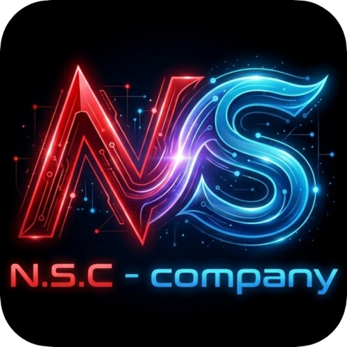
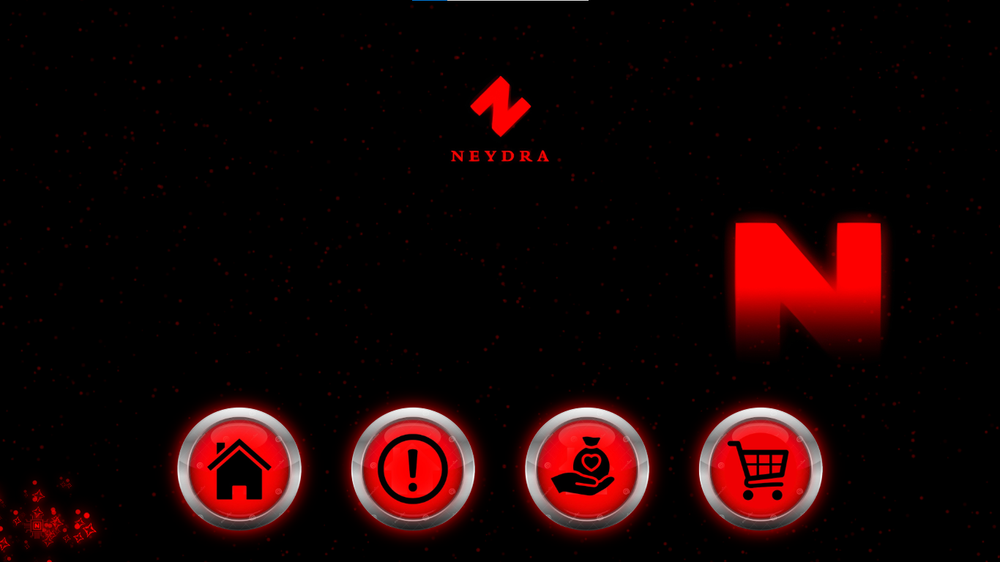
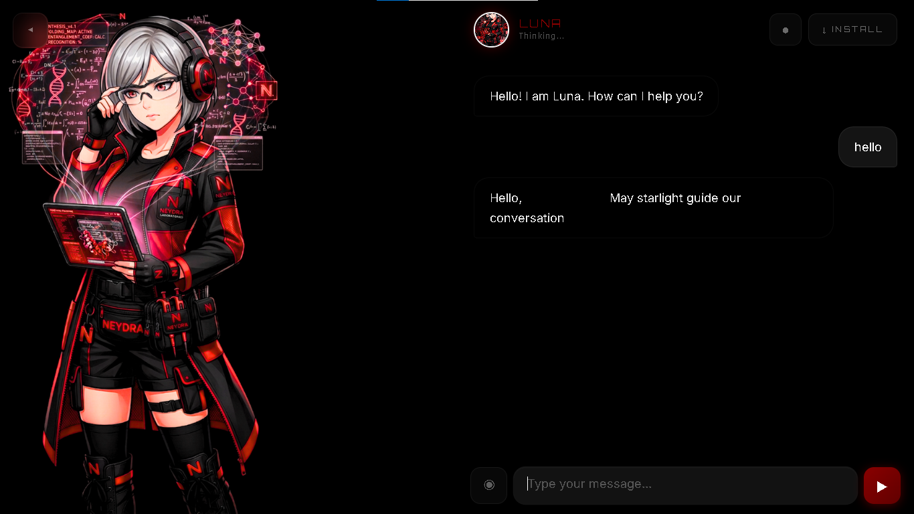
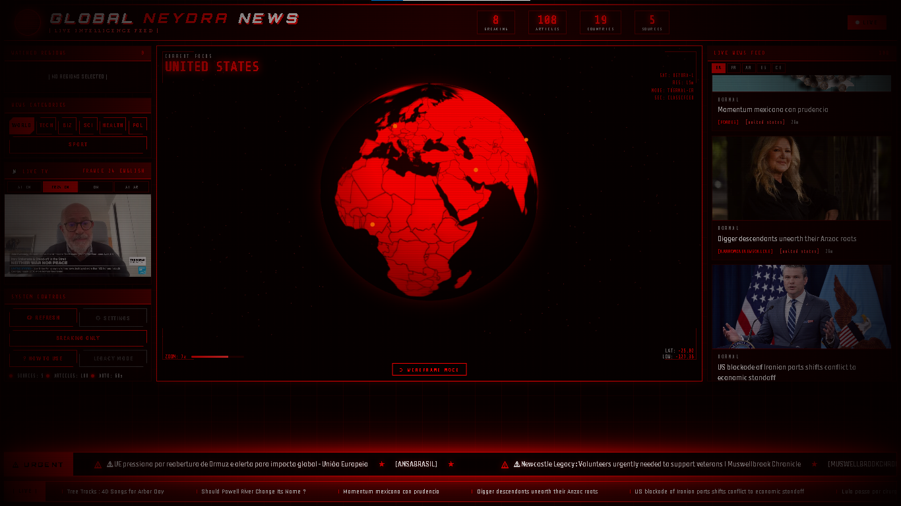
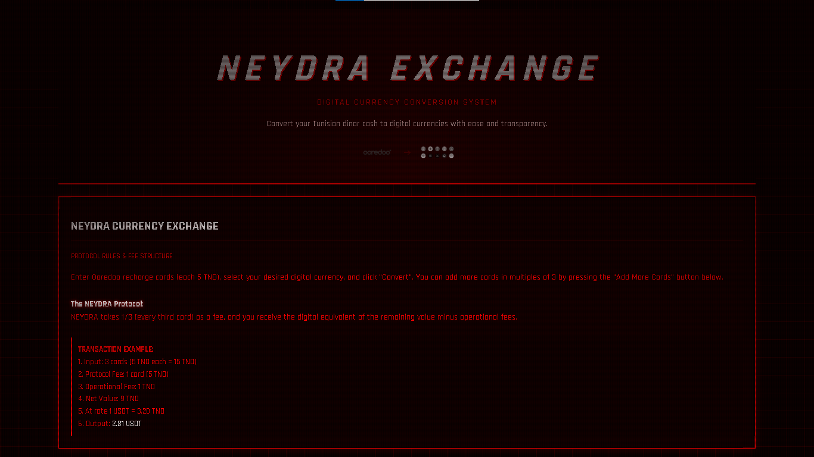
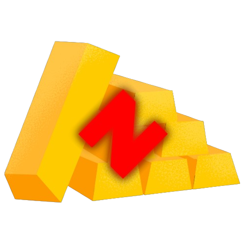
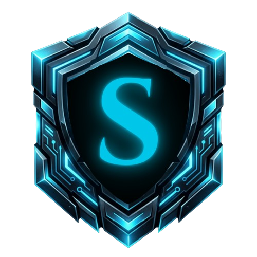
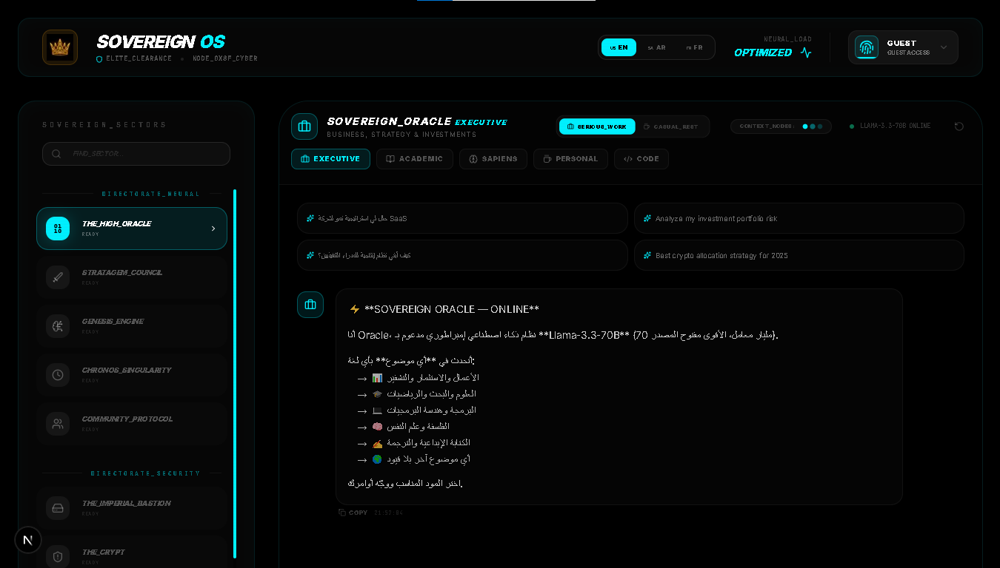
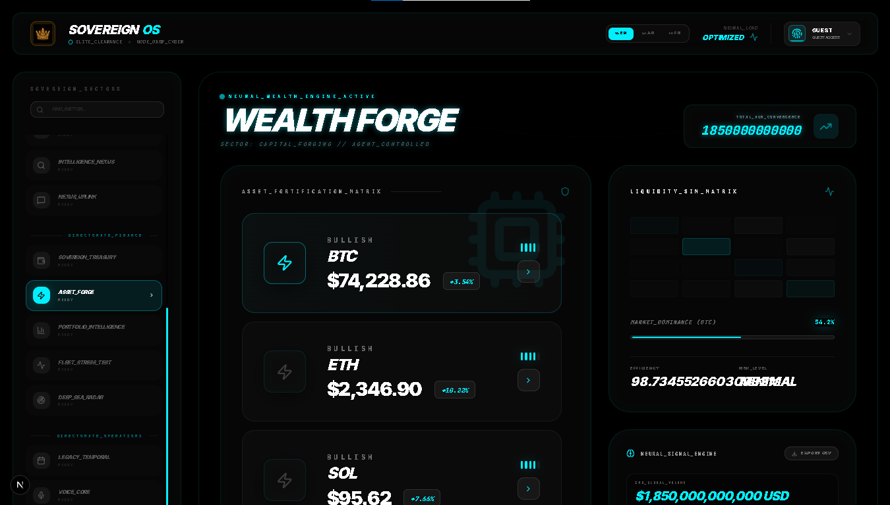
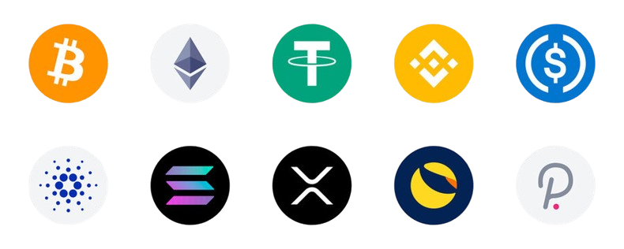

The Neydra Ecosystem
Neydra is a sprawling, high-end ecosystem that seamlessly merges advanced AI companionship, real-time global news aggregation, and a robust digital marketplace. Built by Founder & Lead Developer Ilyes Jarray, Neydra transcends the boundaries of traditional software. It is positioned not just as a tool, but as a cybernetic lifestyle platform characterized by a dark, futuristic aesthetic.
The Lobby & Core
The central nervous system of the platform, bringing all modules together in a cohesive, unified dashboard that feels akin to operating a spaceship. Access the AI, Global News, Marketplace, and Exchange directly from this cybernetic hub.

Neydra AI Assistants
Neydra offers highly specialized AI personas, each with distinct characteristics and utilities. Personas like "Luna" and "Astra" aren't mere chatbots; they are fully realized digital entities wrapped in anime-inspired, high-tech visuals.

Global News Engine
A state-of-the-art news aggregation engine. It filters the noise of the internet, delivering high-impact updates on AI, Crypto, and Markets through a sleek, glowing blue interface. Features include a 3D interactive Earth module for geo-tracking data points.

Exchange & Marketplace
A dual-function financial hub. Users can purchase digital assets directly from the "Shop," or trade cryptocurrencies via the platform's native exchange, complete with real-time candlestick charts, order books, and high-performance trading tools.

Premium Architecture
Neydra's architecture is a masterclass in frontend performance and backend obfuscation, utilizing custom compiled NLP and PAE engines. The dark, piercing neon aesthetics are maintained across all platform modules.

The Sovereign Terminal
The Sovereign is an elite, high-performance financial intelligence operating system. Driven by co-founder Rayen Lachiheb, it is designed for institutional-grade market tracking, autonomous AI-powered analysis, and rapid economic arbitration. Where Neydra provides the ecosystem, The Sovereign provides the surgical tools for financial dominance.

The Oracle
A sophisticated intelligence dashboard that maps complex data nodes and predictive models. Utilizing vivid cyan glowing elements on deep black backgrounds, the Oracle visualizes market trends before they happen.

Wealth Forge
The command center for cryptocurrency markets. It tracks live metrics for BTC, ETH, SOL, providing market dominance bars, efficiency metrics, and algorithmic trading signals in a layout that rivals professional trading terminals.

TND To Crypto Engine
A specialized financial bridge for converting Tunisian Dinars directly into decentralized assets. It bypasses traditional economic friction, allowing rapid onboarding into the global crypto market.
